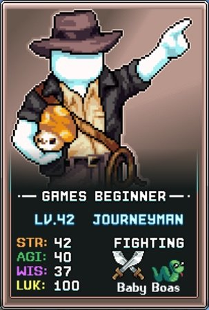
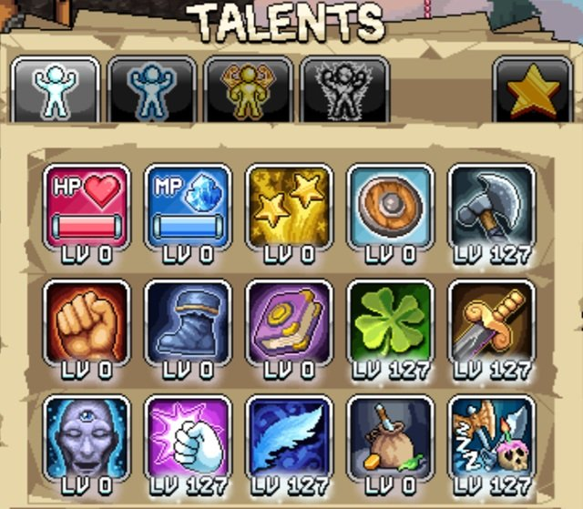
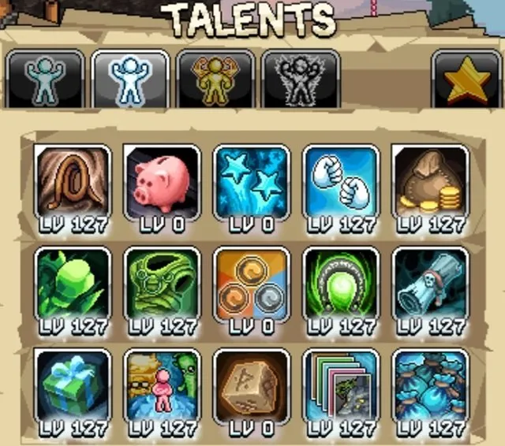
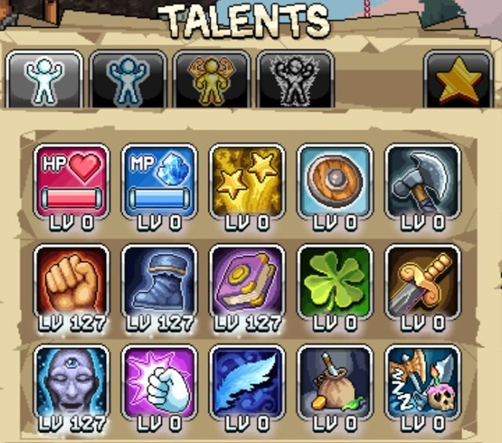
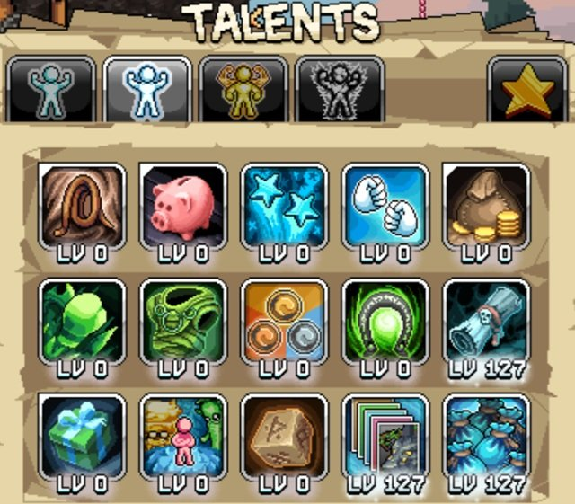

이 가이드에서는 비밀 클래스인 Journeyman을 얻는 방법과 최적의 빌드를 구성하는 방법을 설명합니다. Journeyman은 영구적인 초보자(Beginner) 상태를 유지하는 독특한 캐릭터로, 기존의 직업 승급 경로를 따르지 않기 때문에 고유한 탤런트를 갖지만 신규 플레이어에게는 혼란을 줄 수 있습니다.
Journeyman은 7번째 캐릭터로 해금하는 것을 추천합니다. 이 클래스를 효과적으로 활용하려면 다른 계정 진행도가 먼저 갖춰져 있어야 하기 때문입니다. 아래에 소개하는 스킬 빌드와 전투 빌드를 함께 활용하면 Beginner 클래스의 완성도를 높일 수 있습니다.

Journeyman 해금 방법 (비밀 클래스)
Journeyman을 얻으려면 게임 내 비밀 퀘스트를 완료해야 합니다. 이를 위해 Promotheus와 그의 직업 승급 퀘스트를 완전히 건너뛰어야 합니다. 여러 단계가 있지만 필요한 아이템 자체는 비교적 간단하며, 핫도그는 충분히 모으는 데 약 반 주(3~4일)가 걸리므로 미리부터 구매해 두는 것이 좋습니다.
| 필요 아이템 | 수량 | 획득 방법 |
|---|---|---|
| Peanuts | 1,651 | 모루(Anvil)에서 Hot Dog 2개, Copper Ore 1개, Bleach Log 1개를 조합해 제작합니다. 레시피는 World 1 개구리 맵의 Picnic Stowaway 퀘스트를 완료하면 해금됩니다. |
| Hot Dogs | 3,302 | W1 마을 상점(하루 750개) 또는 W1 보스 맵 상인(하루 1,000개)에서 구매할 수 있습니다. |
| Bleach Logs | 1,651 | World 1 콩(Beans) 맵에 위치한 자작나무(Birch Tree)에서 수집합니다. |
| Copper Ore | 1,651 | World 1 마을 왼쪽 포털에서 채굴합니다. |
| Gold Bars | 250 | 골드 광석은 World 1 마을에서 두 포털 왼쪽에서 채굴한 뒤, World 1 마을 제련소에서 주괴로 변환합니다. |

Journeyman 빌드 – 전투(Fighting)
전투 목적의 Journeyman은 아래의 Beginner 탤런트 탭을 우선순위에 따라 획득하십시오. 이 탤런트들은 AFK(방치) 수익, 경험치, 드롭률을 극대화하여 더 높은 레벨과 희귀 드롭을 달성하는 데 도움이 됩니다.
| 탤런트 | 효과 | 설명 |
|---|---|---|
| Lucky Clover | 기본 LUK(행운) 증가 | Journeyman에게 LUK 스탯은 Accuracy(명중률)이자 데미지입니다. 현재 몬스터에 대해 충분한 Accuracy를 확보한 후 이 우선순위 목록을 내려가되, Accuracy가 부족해지면 다시 올라오십시오. |
| Sleepin' On The Job | 전투 AFK 수익률 % 증가 | AFK 수익률을 높이면 전투 중 얻는 경험치와 드롭이 개선됩니다. |
| Sharpened Axe | 기본 무기 파워 증가 | 초반 게임에서 기본 무기 파워는 데미지에 눈에 띄는 영향을 주어 더 멀리 진격할 수 있게 해줍니다. |
| Gilded Sword | 주는 데미지 % 증가 | 데미지의 기반이 생기고 나면 Gilded Sword의 % 부스트가 추가적인 데미지 향상을 가져다줍니다. |
| Featherweight | 이동 속도 % 증가 | AFK 수익에 소폭 기여하며, Idleon 세계를 탐험할 때 편의성도 높여줍니다. |
| Knucklebuster | 치명타 데미지 % 증가 | 게임을 진행하며 계정 전체의 치명타 확률 원천을 갖추게 될수록 효과가 강해집니다. |

Journeyman에는 복잡하고 특수한 용도의 탤런트들이 몇 가지 있으므로, 아래 Journeyman 탤런트 우선순위 목록의 각 스킬 설명을 주의 깊게 읽으십시오.
| 탤런트 | 효과 | 설명 |
|---|---|---|
| Indiana Attack | 채찍을 앞으로 휘둘러 데미지를 입히고 몬스터를 끌어당김 | 공격 탤런트를 해금하기 위해 우선 1포인트를 투자하면 AFK 수익이 오르고 보스 처치 등 Active(직접 플레이) 전투에도 유용합니다. 아래 다른 유틸리티 탤런트들을 충분히 고려한 후에 추가 포인트를 넣으십시오. |
| Two Punch Man | 주먹이 2번 타격하며 추가 데미지 적용 | 위와 비슷한 용도로, 마찬가지로 처음에는 1포인트만 찍고 아래 유틸리티 탤런트에 집중하는 것을 권장합니다. |
| Cmon Out Crystals | 크리스탈 몬스터 소환 확률 % 증가 | Crystal Monster(크리스탈 몬스터)를 Active 파밍할 때 소환 확률을 높이는 핵심 탤런트입니다. Journeyman이 Maestro로 승급한 후, 크리스탈 파밍을 할 때에만 투자를 권장합니다. |
| Cards Galore | 카드 드롭 확률 % 증가 | 계정 진행에 필요한 유용한 카드(보스 카드 등)를 쌓을 수 있도록 해주는 초반 주요 전리품·유틸리티 스킬입니다. 탤런트 레벨 35에서 이 스킬의 카드 드롭률 혜택의 절반을 얻을 수 있습니다. |
| Curse Of Mr Looty Booty | 드롭률 % 증가 / 데미지 % 감소 | 플레이어가 자신의 계정 진행도를 판단하여 신중하게 사용해야 하는 탤런트입니다. 데미지를 충분히 유지하면서 드롭률을 극대화하도록 조금씩 레벨을 높여 나가십시오. |
| Rares Everywhere! | 희귀 드롭 테이블 확률 % 증가 | Obols, 조각상, 희귀 음식 아이템 등 희귀 드롭 테이블의 아이템을 발견할 확률을 높입니다. 몬스터 카드 메뉴에서 확인할 수 있는 파란색 희귀 드롭 가방(Rare Drop Bags) 아이템에 적용됩니다. |
| Gimme Gimme | 전리품이 2배로 떨어질 확률 % 증가 | Active 상태에서만 작동하므로 Crystal Monster 파밍이나 추가 전리품을 위한 보스 파밍에 특화된 탤런트입니다. |
| Its Your Birthday! | 무작위 보상을 드롭함 | 이 탤런트가 24시간마다 무료 게임 보상(Time Candy, Experience Balloons, Gems)을 제공하는 순간부터 1포인트만으로도 환상적인 가성비를 냅니다. 여유 포인트가 생기면 추가 투자하여 쿨다운이 즉시 초기화될 확률을 높일 수 있습니다. |
| Lucky Horseshoe | 기본 LUK 증가 | 남는 포인트는 기본 행운 스탯 증가에 투자하고, 그 이상은 Lucky Hit와 F'Luk'Ey Fabrics에 투자하여 데미지를 올릴 수 있습니다. |

Journeyman 빌드 – 스킬링(Skilling)
Skilling(생산 스킬)은 Journeyman에게 어렵지만 중요한 과제입니다. Maestro 직업 승급을 위해 높은 스킬 레벨이 요구되기 때문입니다. 아래의 Beginner 및 Journeyman 탤런트 탭을 우선순위에 따라 획득하십시오.
| 탤런트 | 효과 | 설명 |
|---|---|---|
| First of Rage / Quickness Boots / Book of the Wise (Beginner 탭) | 기본 STR/AGI/WIS 증가 | 각각 해당하는 W1·W2 스킬의 Skilling 수익에 소폭 기여합니다. 즉, 근력(STR)은 채굴/낚시, 민첩(AGI)은 채집(Catching), 지혜(WIS)는 벌목(Chopping)에 대응합니다. |
| Happy Dude (Beginner 탭) | 모든 스킬 경험치 % 증가 | Journeyman으로 스킬링할 때 목표 달성에 경험치 증가가 핵심적입니다. |
| Curse Of Mr Looty Booty | 드롭률 % 증가 / 데미지 % 감소 | 스킬링에서는 데미지가 역할을 하지 않으므로, 카드나 희귀 아이템을 파밍하기 위한 훌륭한 스킬입니다. 추가 드롭률에 어떠한 단점도 없습니다. |
| Cards Galore | 카드 드롭 확률 % 증가 | 스킬링 카드는 스킬링 수익에 강력한 보너스를 제공합니다. Journeyman은 Cards Galore와 Curse Of Mr Looty Booty를 함께 극대화하여 이를 파밍하기에 최적의 클래스입니다. |
| Rares Everywhere! | 희귀 드롭 테이블 확률 % 증가 | 스킬링 자원 노드의 희귀 드롭 테이블에는 Obols, 은 펜, 황금 음식 등 여러 유용한 아이템이 포함되어 있습니다. |
